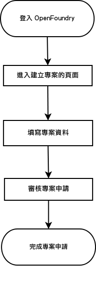
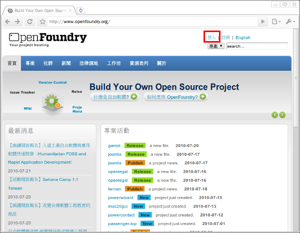
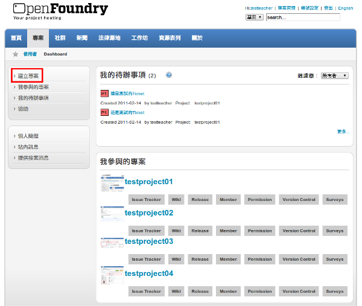
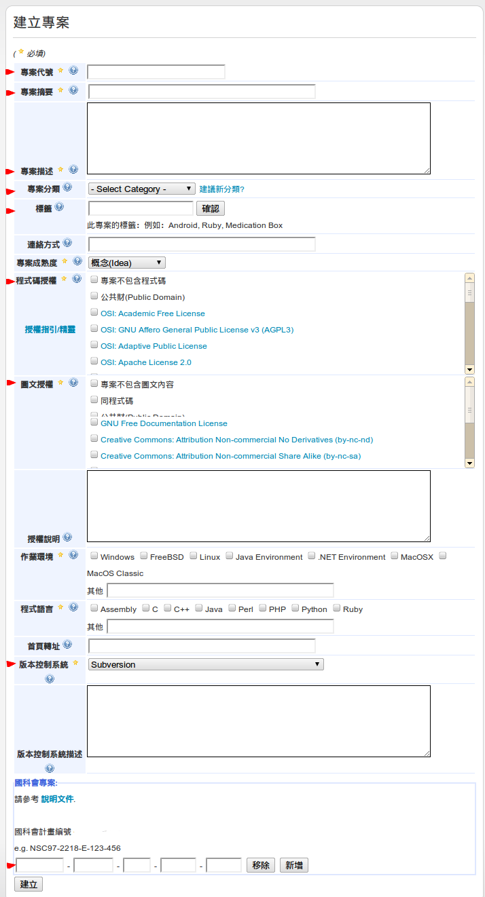
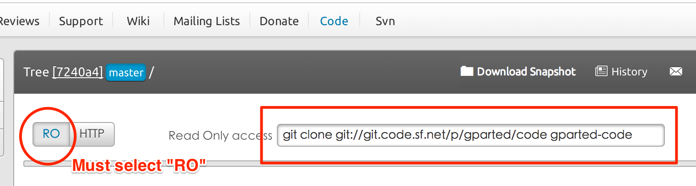

建立專案

-
本單元簡介建立專案的流程以及申請時應注意的事項。（手冊會以進駐 OpenFoundry 科技部專案為說明範例）
-
要先登入 OpenFoundry 平台才能建立新專案。（在此為了強調進駐國科會專案與計畫申請人的相關性；請務必利用計畫申請人的帳號來進行專案申請，使計畫申請人成為國科會專案的建立者）
-
操作流程步驟如下圖所示：

操作步驟
-
於網址列上輸入 https://www.openfoundry.org/ 進入 OpenFoundry 首頁，接著在首頁的右上方點選【登入】連結。

-
進入登入頁面，輸入帳號與密碼後點選【登入】按鈕。

（ 註：請用計畫申請人的帳號來進行專案申請，使計畫申請人成為國科會專案的建立者 ）
-
成功登入後，請在左方的選單列中點選【建立專案】功能。

-
進入如下圖頁面，並在此頁面中填寫所需的相關資料。

（註： 代表必填欄位，點選符號會出現欄位輔助說明 ）
| 欄位 | 欄位說明 | 範例說明 |
|---|---|---|
| 專案代號 |
必填，設定 3~15 小寫英文字母及數字字元。 |
openfoundry |
| 專案摘要 | 必填，科技部專案此欄位為必填欄位。 專案的簡短文字介紹，設定 3~255 字元。 注意，請用最精準的一句話來形容您的專案特性。 |
OpenFoundry是一個供自由軟體專案開發人討論、編寫、管理其專案內容所設置的共同作業平台。 |
| 專案描述 |
必填，科技部專案此欄位為必填欄位。 注意，請將科技部計畫編號及分類編寫於此欄位中，以方便審核委員查找及參閱計畫成果。討論、編寫、管理其專案內容 |
科技部計畫編號：MOST97-2218-E-001-001 科技部計畫分類：資訊安全 OpenFoundry是一個供自由軟體專案開發人員討論、編寫、管理其專案內所設置的共同作業平台。一般使用者可以透過此平台下載所需的自由軟體，並提供下載程式的改良意見。 |
| 程式碼授權 | 請填寫適合專案的授權條款，可利用網站上方選單列中【授權 指引/ 精靈】功能選擇合適的授權；如果對授權條款不是很了解，可直接至下列連結詢問程式碼的授權方式： https://www.openfoundry.org/forum.html |
相關資訊： https://www.openfoundry.org/Law-and-Policy.html |
| 專案分類 | 請選擇適合專案的分類，如屬於多重分類的話，請選擇一個主要的分類，其餘的可透過標籤加強您專案的屬性。 (此功能將於2011/1/24 上線) |
例如：嵌入式管理系統，專案分類請選擇 Embedded |
| 標籤(Tag) | 以逗號分隔，可下多筆(Tag)，此欄位可協助使用者快速找到您的專案，愈精確愈好。 (此功能將於2011/1/24 上線) |
例如：Android, p2p, Medication box |
| 圖文授權 | 請填寫適合專案的圖文授權條款，礙於篇幅在此不多加說明；如果對圖文授權方面需要更多的輔助資訊，可直接至下列連結發文詢問： https://www.openfoundry.org/forum.html |
相關資訊： https://creativecommons.org.tw/static/license |
| 版本控制系統 | 建議，選擇 Git 或 Subversion | |
| 科技部計畫編號 | 必填，科技部專案此欄位為必填欄位。 注意，請依欄位填入科技部計畫編號如 MOST103-2218-E-001-001 若此專案進入到第二或第三之後的年度會拿到不同的專案編號，請按[新增]再續填寫 |
MOST103-2218-E-123-456 MOST103-2218-E-001-001
|
| 外部版本控制系統 | 科技部專案，如果版本控制系統選擇「使用其他站台的版本控制系統」必須填入在GitHub, Google Code 或SoureForge 的網址 |
|
| SoureForge 版本控制URI |
科技部專案在外部版本控制系統欄位使用SoureForge 時，則需輸入SoureForge 上外部版本控制的Read Only URI！  |
|